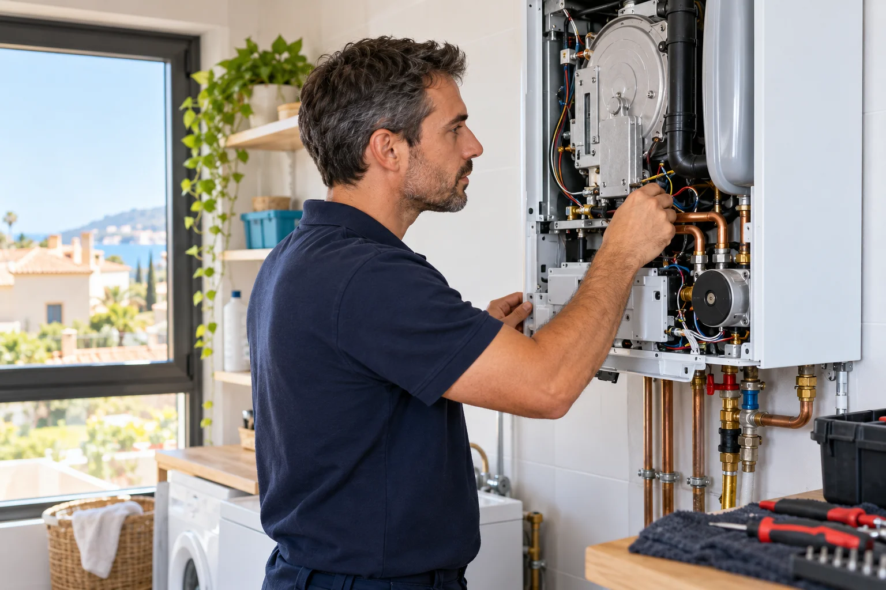
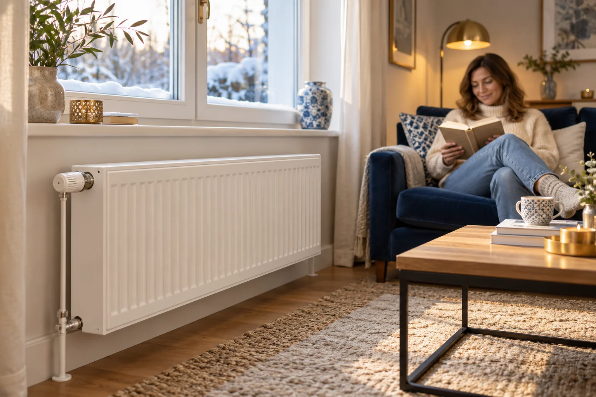
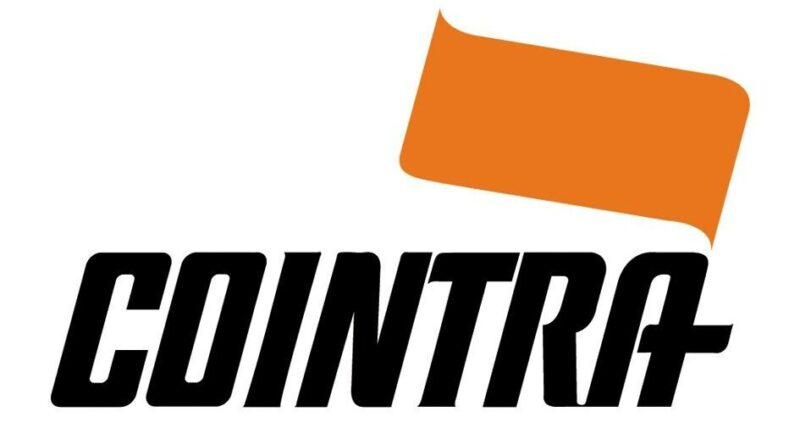
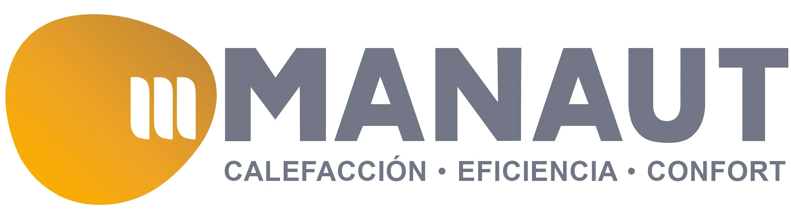

El agua sale fría
La caldera no proporciona agua caliente o la temperatura cambia durante la ducha. Indica si el fallo afecta también a la calefacción.

CALDERAS · CALEFACCIÓN · TERMO
¿Sin agua caliente o con la calefacción parada? Cuéntanos qué le ocurre a tu caldera. En Global Técnicos gestionamos tu solicitud de reparación en toda España.
Indícanos tu localidad, la marca y el fallo de la caldera.

¿QUÉ LE OCURRE A TU CALDERA?
Una caldera puede fallar de formas diferentes. Describe los síntomas para que podamos orientar la solicitud de asistencia.
La caldera no proporciona agua caliente o la temperatura cambia durante la ducha. Indica si el fallo afecta también a la calefacción.
La calefacción no arranca o se detiene. Cuéntanos si ocurre en todos los radiadores y si aparece algún aviso en la caldera.
Anota el código que muestra la pantalla y la marca del equipo. Estos datos ayudan a identificar el motivo de tu consulta.
Si la presión baja de forma repetida o aumenta de manera anormal, solicita una revisión del fallo en lugar de seguir ajustándola.
Indica dónde aparece la pérdida y desde cuándo ocurre. No abras el equipo ni manipules sus componentes internos.
Describe cuándo se detiene o qué ruido has notado. El diagnóstico y la reparación requieren valorar el equipo.

EL CONFORT DE TU CASA
La reparación de una caldera comienza por entender la avería. Nos facilitas los datos del equipo y tu ubicación para organizar la atención.
Contacta también si el fallo afecta a la producción de agua caliente sanitaria o al funcionamiento de la calefacción.
Cuéntanos qué necesitasREPARACIÓN MULTIMARCA
Reparamos todo tipo de marcas de calderas y calentadores. Cuéntanos la marca, el modelo y la avería para confirmar la asistencia disponible para tu equipo.


Los nombres y logotipos pertenecen a sus titulares. Global Técnicos es un servicio independiente y no está afiliado a estos fabricantes.
ASÍ EMPEZAMOS
Rellena el formulario con tus datos y una descripción del fallo.
Necesitamos saber dónde estás, la marca de la caldera y, si lo conoces, su modelo o código de error.
Confirmaremos contigo la disponibilidad en tu zona y las condiciones de la intervención antes de organizarla.
COBERTURA NACIONAL
Atendemos solicitudes de distintas localidades a través de nuestra central. Indica tu ciudad y código postal para confirmar la asistencia disponible en tu zona.
RESOLVEMOS TUS DUDAS
Si necesitas concretar tu caso, escríbenos a través del formulario.
Tu nombre, teléfono, localidad y una descripción del fallo. Si tienes la marca, el modelo y el código de error, facilítalos también.
Depende del fallo, del equipo y de los repuestos necesarios. Contacta para conocer las condiciones aplicables a tu solicitud; no todas las averías tienen el mismo coste.
Sí, puedes contactar con la central desde cualquier localidad de España. Confirmaremos la disponibilidad y las condiciones de asistencia para tu zona.
Esta página corresponde a Global Técnicos y no acredita vinculación oficial con un fabricante. Indica la marca y el modelo para consultar si podemos atender tu equipo.
No manipules el interior del equipo. Anota los síntomas y sigue las indicaciones de seguridad del fabricante. Contacta para solicitar una valoración de la avería.
HABLEMOS DE TU CALDERA
Déjanos tu teléfono y cuéntanos qué ocurre. Contactaremos contigo para concretar la solicitud.
info.globaltecnicos@gmail.comEl formulario remite tu nombre, teléfono, ubicación y descripción de la avería al correo info.globaltecnicos@gmail.com, para gestionar tu consulta y contactar contigo. El envío se realiza mediante el servicio externo FormSubmit. Puedes escribir al mismo correo para consultar sobre tus datos. Las imágenes de esta página son ilustrativas.